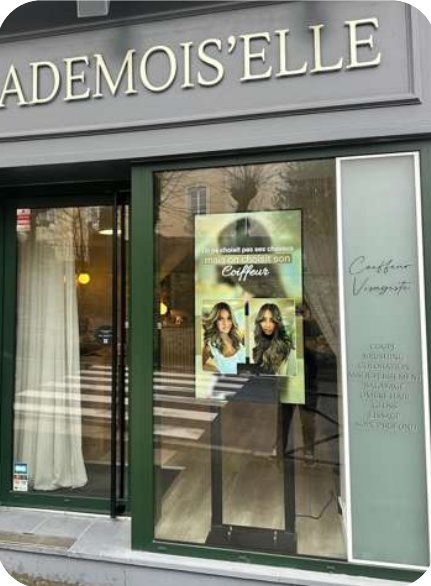

Écran vitrine pour salon de tatouage, perçage et esthétique
Un métier qui se choisit entièrement sur l'image, et dont l'image vit sur un téléphone. La vitrine est le seul endroit où elle peut arrêter quelqu'un qui n'était pas déjà en train de vous chercher.

Le portfolio est en ligne, la vitrine est vide
C'est le décalage central de ce métier. Tout le travail de démonstration se fait sur Instagram : les pièces terminées, les styles, les artistes, les cicatrisations. Et devant la boutique, on trouve un vitrophanie noire, deux autocollants et une affiche de convention datant de l'an dernier.
Résultat : vous êtes très visible pour quelqu'un qui vous cherche déjà, et totalement invisible pour celui qui passe devant. Or beaucoup de premiers tatouages se décident lentement, à partir d'une envie vague, par quelqu'un qui ne suit encore aucun studio.
Un écran en vitrine fait le pont : il sort votre portfolio du téléphone et le met dans la rue. Les pièces défilent, les styles se distinguent, et le QR code renvoie vers le compte où tout le reste se trouve.
Montrer les artistes, pas seulement les pièces
Dans un studio à plusieurs, c'est la chose la plus utile à afficher et la plus rarement faite. Un client ne choisit pas un salon, il choisit quelqu'un : un style de trait, un univers, une spécialité — réalisme, fine line, old school, blackwork, couverture de cicatrice.
Un écran qui présente chaque artiste avec quelques pièces et ses jours de présence répond à la question avant qu'elle soit posée, et il fait gagner un temps considérable sur les premiers échanges. Même logique pour le perçage : les poses pratiquées, les bijoux disponibles, les délais de cicatrisation.
L'hygiène, votre meilleur argument non utilisé
C'est le frein numéro un des personnes qui n'ont pas encore franchi la porte, et presque personne n'en parle en vitrine — sans doute parce que cela paraît évident de l'intérieur du métier.
Rappelons le cadre : l'activité doit être déclarée à l'Agence régionale de santé, et le professionnel doit détenir une attestation de formation aux règles d'hygiène et de salubrité, d'au moins 21 heures, renouvelable tous les cinq ans. Vous avez donc un dossier solide à montrer.
Matériel à usage unique, stérilisation, traçabilité des encres, protocole de soin : ce sont des informations factuelles, rassurantes, et qui vous distinguent immédiatement d'une pratique non déclarée. Ce que vous devez afficher réglementairement en salle relève de votre ARS et de votre syndicat ; ce que vous choisissez d'afficher en plus vous appartient, et vaut le détour.
Les disponibilités, dans un métier d'attente
Les bons artistes affichent complet pendant des mois, ce qui décourage autant que cela rassure. Or la situation réelle bouge en permanence : une annulation, un créneau libéré, un flash day, l'arrivée d'un artiste invité pour une semaine.
Ce sont des informations à durée de vie courte, impossibles à imprimer, et qui déclenchent une décision immédiate quand elles sont vues au bon moment. C'est exactement le type de message pour lequel un écran est fait — et une des rares occasions de convertir quelqu'un qui passait par hasard.
Deux précautions, et elles vous appartiennent
Première précaution : l'accord de la personne tatouée avant de diffuser une photo de son corps. Cela paraît élémentaire, c'est parfois oublié, et un écran en pleine rue n'a pas la même portée qu'une story qui disparaît.
Seconde précaution : une vitrine s'adresse à toute la rue, enfants compris. Le choix des visuels n'est pas le même que sur un compte que les gens décident de suivre. Cela ne veut pas dire édulcorer votre travail, mais choisir ce qui se met en pleine rue.
Nous montons la première boucle avec vous et vous la validez avant diffusion. Ce qui est affiché reste sous votre responsabilité.
Format et budget
Le format vertical s'impose presque toujours : les devantures de ces studios sont étroites, et une pièce tatouée se regarde en portrait. Un 43 pouces (96 × 55 cm) posé en portrait occupe peu de largeur et se lit parfaitement depuis le trottoir d'en face.
Écran de vitrine haute luminosité : 139 € HT par mois en 32 ou 43 pouces sur 60 mois — nécessaire derrière une vitre exposée, où un téléviseur devient un miroir et où les noirs profonds d'un tatouage disparaissent complètement. Écran intérieur pour la salle d'attente : à partir de 49 €. Matériel, logiciel, première boucle de dix visuels, installation, formation et SAV compris.
Les questions propres au tatouage et au perçage
Peut-on afficher des photos de tatouages en vitrine ?
Rien ne l'interdit, et c'est le contenu le plus efficace du métier. Deux précautions de bon sens : l'accord de la personne tatouée avant de diffuser une photo, et un choix de visuels adapté à une rue passante, où des enfants passent aussi. Vous restez responsable de ce qui est affiché ; nous montons la boucle avec vous et vous la validez.
Faut-il afficher quelque chose d'obligatoire ?
Votre activité doit être déclarée à l'Agence régionale de santé — création, cessation ou transfert, dans un délai de quinze jours — et vous devez détenir une attestation de formation aux règles d'hygiène et de salubrité, d'une durée d'au moins 21 heures, à renouveler tous les cinq ans. Ce que la réglementation impose d'afficher en salle relève de votre ARS et de votre syndicat, pas de nous. En revanche, montrer votre sérieux sur l'hygiène est un excellent contenu volontaire.
Je travaille uniquement sur rendez-vous, à quoi bon une vitrine ?
Justement parce que vous ne recevez pas de passage : la vitrine est votre seule présence physique permanente, et elle travaille pendant que vous tatouez. Elle affiche votre style, vos artistes, vos disponibilités, et un QR code vers votre compte Instagram ou votre agenda. C'est un métier où le choix se fait sur le portfolio, et le portfolio est en ligne — l'écran fait le pont entre la rue et l'écran du téléphone.
À voir aussi
Les métiers voisins et les questions de matériel.
Nous venons voir la devanture
Le format vertical s'impose souvent ici. Repérage et devis gratuits.
Demandez votre étude gratuite
Dites-nous si vous travaillez sur rendez-vous ou en passage, et à quelle distance se lit votre vitrine.
- Réponse sous 48 heures
- Nous venons voir votre devanture sur place
- Simulation de votre vitrine, sans engagement